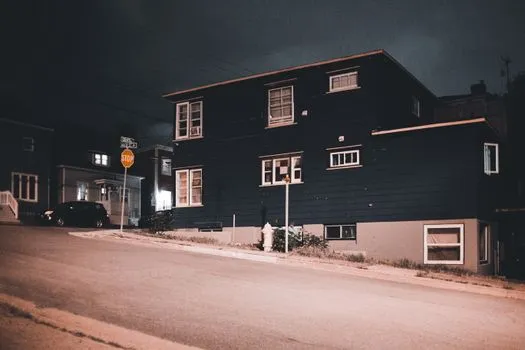
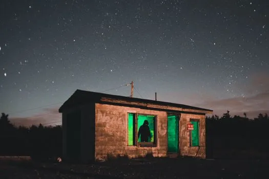
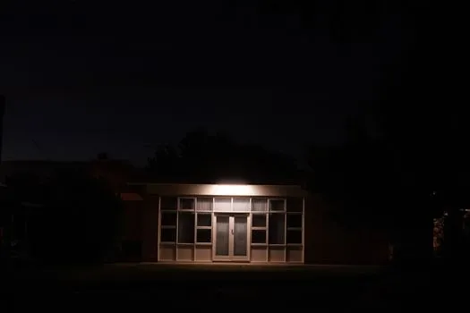
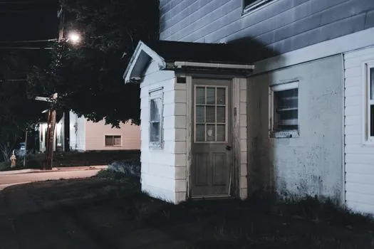

12689707A serene nighttime view of urban residential houses on a quiet street with soft lighting and gentle ambiance.

12689707A serene nighttime view of urban residential houses on a quiet street with soft lighting and gentle ambiance.

9901404A small house with green light under a starry sky, creating a mysterious ambiance.

30425532A secluded building entrance is illuminated by a single light in the darkness of night, creating a mysterious atmosphere.

9538597A moody nighttime view of a house entrance featuring a wooden porch and vintage architecture.